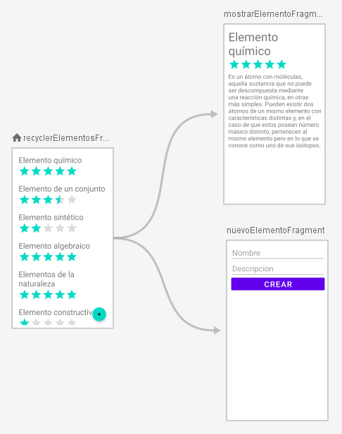
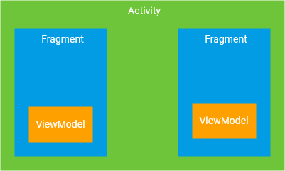
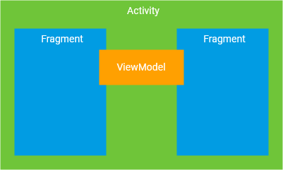
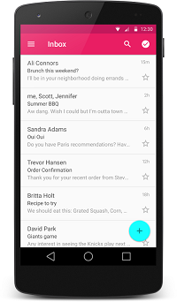
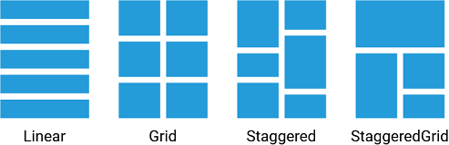
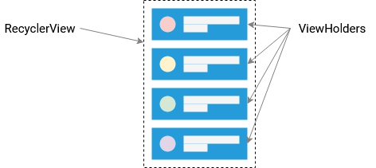
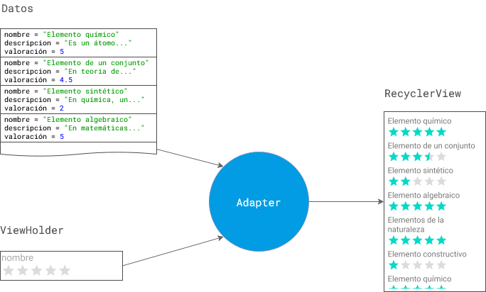
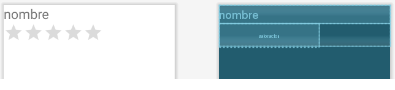
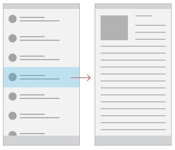

Crea el proyecto
Clona (o descarga) este repositorio: https://github.com/gerardfp/recyclerview_template
En esta plantilla de proyecto se ha implementado la base de la arquitectura MVVM:
-
Se ha configurado la navegación con las siguientes Views:
MostrarElementoFragment: Muestra el detalle de un Elemento
NuevoElementoFragment: Permite introducir los datos y añadir un nuevo Elemento a la lista
-
RecyclerElementosFragment: Muestra la lista de todos los Elementos.
También tiene un FloatingActionButton, que permite navegar hacia el NuevoElementoFragment.

-
Se ha añadido un Model para almacenar los Elementos:
La clase Elemento simplemente es para contener los datos de un Elemento.
Elemento.java
public class Elemento {
String nombre;
String descripcion;
float valoracion;
public Elemento(String nombre, String descripcion) {
this.nombre = nombre;
this.descripcion = descripcion;
}
}
La clase ElementosRepositorio mantiene los Elementos en un ArrayList:
En el constructor se añaden algunos Elementos de ejemplo.
Tiene dos métodos para insertar() o eliminar() un Elemento, que retornan en un callback,
el ArrayList de Elementos resultante.
También tiene un método para actualizar la valoración de un Elemento.
ElementosRepositorio.java
import java.util.ArrayList;
import java.util.List;
public class ElementosRepositorio {
List<Elemento> elementos = new ArrayList<>();
interface Callback {
void cuandoFinalice(List<Elemento> elementos);
}
ElementosRepositorio(){
elementos.add(new Elemento("Elemento químico", "Es un átomo con moléculas, aquella sustancia que no puede ser descompuesta mediante una reacción química, en otras más simples. Pueden existir dos átomos de un mismo elemento con características distintas y, en el caso de que estos posean número másico distinto, pertenecen al mismo elemento pero en lo que se conoce como uno de sus isótopos."));
elementos.add(new Elemento("Elemento de un conjunto", "En teoría de conjuntos, un elemento o miembro de un conjunto (o familia de conjuntos) es un objeto que forma parte de ese conjunto (o familia)."));
elementos.add(new Elemento("Elemento sintético", "En química, un elemento sintético es un elemento químico que no aparece de forma natural en la Tierra, y solo puede ser creado artificialmente."));
elementos.add(new Elemento("Elemento algebraico", "En matemáticas, más concretamente en álgebra abstracta y teoría de cuerpos, se dice que un elemento es algebraico sobre un cuerpo si es raíz de algún polinomio con coeficientes en dicho cuerpo. Los elementos algebraicos sobre el cuerpo de los números racionales reciben el nombre de números algebraicos."));
elementos.add(new Elemento("Elementos de la naturaleza","Los cuatro o cinco elementos de la naturaleza —normalmente agua, tierra, fuego y aire, a los que se añade la quintaesencia o éter— eran, para muchas doctrinas antiguas, los constituyentes básicos de la materia y explicaban el comportamiento de la naturaleza. El modelo estuvo vigente hasta que la ciencia moderna empezó a desentrañar los elementos y reacciones químicas."));
elementos.add(new Elemento("Elemento constructivo","Un elemento constructivo es cada uno de los componentes materiales que integran una obra de construcción. Se suelen clasificar en estructurales y compartimentadores."));
}
List<Elemento> obtener() {
return elementos;
}
void insertar(Elemento elemento, Callback callback){
elementos.add(elemento);
callback.cuandoFinalice(elementos);
}
void eliminar(Elemento elemento, Callback callback) {
elementos.remove(elemento);
callback.cuandoFinalice(elementos);
}
void actualizar(Elemento elemento, float valoracion, Callback callback) {
elemento.valoracion = valoracion;
callback.cuandoFinalice(elementos);
}
}
-
Se ha creado un ViewModel que expone las acciones sobre el modelo (insertar y eliminar), guardando
el array de Elementos en un MutableLiveData que pueda ser observado por las vistas.
También expone la acción de actualizar la valoración.
ElementosViewModel.java
import android.app.Application;
import androidx.annotation.NonNull;
import androidx.lifecycle.AndroidViewModel;
import androidx.lifecycle.MutableLiveData;
import java.util.List;
public class ElementosViewModel extends AndroidViewModel {
ElementosRepositorio elementosRepositorio;
MutableLiveData<List<Elemento>> listElementosMutableLiveData = new MutableLiveData<>();
public ElementosViewModel(@NonNull Application application) {
super(application);
elementosRepositorio = new ElementosRepositorio();
listElementosMutableLiveData.setValue(elementosRepositorio.obtener());
}
MutableLiveData<List<Elemento>> obtener(){
return listElementosMutableLiveData;
}
void insertar(Elemento elemento){
elementosRepositorio.insertar(elemento, new ElementosRepositorio.Callback() {
@Override
public void cuandoFinalice(List<Elemento> elementos) {
listElementosMutableLiveData.setValue(elementos);
}
});
}
void eliminar(Elemento elemento){
elementosRepositorio.eliminar(elemento, new ElementosRepositorio.Callback() {
@Override
public void cuandoFinalice(List<Elemento> elementos) {
listElementosMutableLiveData.setValue(elementos);
}
});
}
void actualizar(Elemento elemento, float valoracion){
elementosRepositorio.actualizar(elemento, valoracion, new ElementosRepositorio.Callback() {
@Override
public void cuandoFinalice(List<Elemento> elementos) {
listElementosMutableLiveData.setValue(elementos);
}
});
}
}
ViewModel compartido
La novedad de esta arquitectura MVVM es que el ViewModel es compartido por los 3 fragments.
Cuando se obtiene el ViewModel desde un Fragment, hay dos formas de hacerlo:
- Pasando this (=el propio Fragment) al constructor de ViewModelProvider. En tal caso se
obtiene una instancia del ViewModel propia para el Fragment, a la que solo él tiene acceso.
- Pasando requireActivity() (=la Activity en la que esté el Fragment) al constructor de ViewModelProvider.
Se obtiene una instancia del ViewModel propia de la Activity, que es compartida por todos los Fragments que
se muestren en dicha Activity.
Es decir, si desde los Fragment obtenemos el ElementosViewModel con this, así:
ElementosViewModel elementosViewModel = new ViewModelProvider(this).get(ElementosViewModel.class);
cada Fragment obtiene una instancia del ViewModel propia, a la que solo él tiene acceso:

Si en cambio, desde los Fragments obtenemos el ElementosViewModel con requireActivity(), así:
ElementosViewModel elementosViewModel = new ViewModelProvider(requireActivity()).get(ElementosViewModel.class);
todos los Fragment que estén en la misma Activity obtienen la misma instancia del ViewModel, con la que pueden
compartir datos ente sí:

En esta app usamos el ViewModel compartido, ya que los 3 fragment van a compartir el mismo array de Elementos, y
también permitirá compartir el dato del Elemento seleccionado entre la pantalla de la lista y la pantalla del detalle.
RecyclerView
RecyclerView es un widget que permite mostrar y hacer scroll en una lista de elementos basados en grandes conjuntos de datos (o
datos que cambian frecuentemente). Es una versión más avanzada y flexible del ListView.

Permite mostrar los datos con 4 disposiciones diferentes:

Para utilizar un RecyclerView son necesarios 3 componentes que funcionan conjuntamente para mostrar los datos:
RecyclerView: Es el contenedor principal para la interfaz de usuario.
ViewHolder: Es la plantilla para mostrar un elemento en el RecyclerView. Cada ítem que se muestra en
el RecyclerView es una copia del ViewHolder. Por ejemplo, si el RecyclerView ha de
mostrar una lista de productos, cada ViewHolder representa un único producto.

Adapter: El adaptador es el encargado de crear los ViewHolder, rellenarlos con los datos, y añadirlos al RecyclerView.

RecyclerElementosFragment
Empezaremos programando el RecyclerElementosFragment para que muestre en un RecyclerView
la lista de Elementos (los del ArrayList).
Será necesario poner a punto los 3 componentes:
- RecyclerView
- ViewHolder
- Adapter
RecyclerView
El RecyclerView es solamente el contenedor en el cual se van a mostrar los datos. Se añade al layout
en el cual se tiene que mostrar la lista. En esta app, en el layout del RecyclerElementosFragment.
En principio el RecyclerView estará vacío, y será más adelante cuando se rellenará (mediante código Java) con
los Elementos del ArrayList.
Lo único a tener en cuenta cuando se añade al layout es especificar la disposición de los ViewHolder; se hace
con el atributo app:layoutManager y en esta app utilizamos el LinearLayoutManager (lista vertical).
Añade el <RecyclerView> al fichero de layout fragment_recycler_elementos.xml:
res/layout/fragment_recycler_elementos.xml
<FrameLayout ...>
//...
<androidx.recyclerview.widget.RecyclerView
android:id="@+id/recyclerView"
android:layout_width="match_parent"
android:layout_height="match_parent"
app:layoutManager="androidx.recyclerview.widget.LinearLayoutManager" />
</FrameLayout>
ViewHolder
El ViewHolder és la plantilla para mostrar un Elemento de la lista. Para crearla, habitualmente se usa:
Un fichero layout con la disposición de los widgets de la plantilla (TextView, ImageView, etc...)
Una clase que habilite el ViewBinding para poder acceder a los widgets.
Crea el fichero de layout viewholder_elemento.xml, con un TextView para mostrar el nombre del Elemento, y un RatingBar para la valoracion.
viewholder_elemento.xml
<?xml version="1.0" encoding="utf-8"?>
<LinearLayout xmlns:android="http://schemas.android.com/apk/res/android"
android:layout_width="match_parent"
android:layout_height="wrap_content"
android:orientation="vertical">
<TextView
android:id="@+id/nombre"
android:layout_width="match_parent"
android:layout_height="wrap_content"
android:textSize="32sp" />
<RatingBar
android:id="@+id/valoracion"
android:layout_width="wrap_content"
android:layout_height="wrap_content"
android:numStars="5" />
</LinearLayout>

El TextView y el RatingBar se rellenarán con los datos de un Elemento del array. Para ello,
creamos una clase en la que guardaremos la variable binding, mediante la cual accederemos
al TextView y al RatingBar
Llamaremos a esta clase ElementoViewHolder. Debe extender de la clase RecyclerView.ViewHolder.
Añade la clase ElementoViewHolder como clase interna de RecyclerElementosFragment:
RecyclerElementosFragment.java
public class RecyclerElementosFragment extends Fragment {
// ...
class ElementoViewHolder extends RecyclerView.ViewHolder {
private final ViewholderElementoBinding binding;
public ElementoViewHolder(ViewholderElementoBinding binding) {
super(binding.getRoot());
this.binding = binding;
}
}
}
Para crear la clase del ViewHolder, hay dos cosas a tener en cuenta: (1) escoger un nombre adecuado y (2) usar la clase
ViewBinding correspondiente al fichero de layout. En este caso el fichero de layout es viewholder_elemento.xml así
que la clase correspondiente es ViewholderElementoBinding. El resto de código la mayoría de veces es tal cual.
Adapter
El Adapter será el encargado de crear las copias del ViewHolder, y rellenarlas con los datos de los
Elementos del ArrayList.
Para crear un Adaptador hay que extender la clase RecyclerView.Adapter y se debe especificar en el
diamante <> la clase del ViewHolder.
Se deben anular 3 métodos:
onCreateViewHolder(): este método es llamado por el RecyclerView cuando necesita crear
una nueva copia del ViewHolder. Se debe retornar una instancia del ViewHolder (en el constructor se inicializa
el ViewBinding).
onBindViewHolder(): lo llama el RecyclerView para rellenar los datos de un ViewHolder
en una posición determinada. Se reciben los parámetros holder y position, que indican el ViewHolder
que hay que rellenar y en qué posición está en el RecyclerView.
getItemCount(): lo llama el RecyclerView para saber cuántos ViewHolder en total se van a mostrar.
Por último, también es muy común hacer que el Adaptador mantenga una referencia al ArrayList de los elementos. Para ello,
se declara una variable, y un método para establecerla. Un aspecto clave de este método es la llamada a
notifyDatasetChanged(). Este método notifica al RecyclerView que al array ha cambiado y que debe volver a
regenerar todos los ViewHolders.
El código del adaptador queda así:
RecyclerElementosFragment.java
public class RecyclerElementosFragment extends Fragment {
// ...
class ElementosAdapter extends RecyclerView.Adapter<ElementoViewHolder> {
List<Elemento> elementos;
@NonNull
@Override
public ElementoViewHolder onCreateViewHolder(@NonNull ViewGroup parent, int viewType) {
return new ElementoViewHolder(ViewholderElementoBinding.inflate(getLayoutInflater(), parent, false));
}
@Override
public void onBindViewHolder(@NonNull ElementoViewHolder holder, int position) {
Elemento elemento = elementos.get(position);
holder.binding.nombre.setText(elemento.nombre);
holder.binding.valoracion.setRating(elemento.valoracion);
}
@Override
public int getItemCount() {
return elementos != null ? elementos.size() : 0;
}
public void establecerLista(List<Elemento> elementos){
this.elementos = elementos;
notifyDataSetChanged();
}
}
}
Para crear la clase del Adaptador, hay que tener en cuenta:
La clase del ViewHolder (en este caso ElementoViewHolder)
La clase de los ítems del ArrayList (en este caso Elemento)
Qué campos hay que rellenar del holder (a los que se accede mediante la variable binding)
y con qué datos del ArrayList hay que rellenarlos
Una vez creada la clase, hay que crear un objeto y asignarlo al RecyclerView con el método setAdapter().
RecyclerElementosFragment.java
public class RecyclerElementosFragment extends Fragment {
// ...
@Override
public void onViewCreated(@NonNull View view, @Nullable Bundle savedInstanceState) {
// ...
ElementosAdapter elementosAdapter = new ElementosAdapter();
binding.recyclerView.setAdapter(elementosAdapter);
}
// ...
}
El último paso solo es asignar el array de Elementos del Adaptador (la variable elementos). El array
se observa del ViewModel y se asigna llamando al método establecerLista().
RecyclerElementosFragment.java
public class RecyclerElementosFragment extends Fragment {
// ...
@Override
public void onViewCreated(@NonNull View view, @Nullable Bundle savedInstanceState) {
// ...
elementosViewModel.obtener().observe(getViewLifecycleOwner(), new Observer<List<Elemento>>() {
@Override
public void onChanged(List<Elemento> elementos) {
elementosAdapter.establecerLista(elementos);
}
});
}
// ...
}
El código completo del RecyclerElementosFragment queda así:
RecyclerElementosFragment.java
public class RecyclerElementosFragment extends Fragment {
private FragmentRecyclerElementosBinding binding;
private ElementosViewModel elementosViewModel;
private NavController navController;
@Override
public View onCreateView(@NonNull LayoutInflater inflater, ViewGroup container, Bundle savedInstanceState) {
return (binding = FragmentRecyclerElementosBinding.inflate(inflater, container, false)).getRoot();
}
@Override
public void onViewCreated(@NonNull View view, @Nullable Bundle savedInstanceState) {
super.onViewCreated(view, savedInstanceState);
elementosViewModel = new ViewModelProvider(requireActivity()).get(ElementosViewModel.class);
navController = Navigation.findNavController(view);
// navegar a NuevoElemento cuando se hace click en el FloatingActionButton
binding.irANuevoElemento.setOnClickListener(new View.OnClickListener() {
@Override
public void onClick(View v) {
navController.navigate(R.id.action_recyclerElementosFragment_to_nuevoElementoFragment);
}
});
// crear el Adaptador
ElementosAdapter elementosAdapter = new ElementosAdapter();
// asociar el Adaptador con el RecyclerView
binding.recyclerView.setAdapter(elementosAdapter);
// obtener el array de Elementos, y pasarselo al Adaptador
elementosViewModel.obtener().observe(getViewLifecycleOwner(), new Observer<List<Elemento>>() {
@Override
public void onChanged(List<Elemento> elementos) {
elementosAdapter.establecerLista(elementos);
}
});
}
class ElementosAdapter extends RecyclerView.Adapter<ElementoViewHolder> {
// referencia al Array que obtenemos del ViewModel
List<Elemento> elementos;
// crear un nuevo ViewHolder
@NonNull
@Override
public ElementoViewHolder onCreateViewHolder(@NonNull ViewGroup parent, int viewType) {
return new ElementoViewHolder(ViewholderElementoBinding.inflate(getLayoutInflater(), parent, false));
}
// rellenar un ViewHolder en una posición del Recycler con los datos del elemento que
// esté en esa misma posición en el Array
@Override
public void onBindViewHolder(@NonNull ElementoViewHolder holder, int position) {
Elemento elemento = elementos.get(position);
holder.binding.nombre.setText(elemento.nombre);
holder.binding.valoracion.setRating(elemento.valoracion);
}
// informar al Recycler de cuántos elementos habrá en la lista
@Override
public int getItemCount() {
return elementos != null ? elementos.size() : 0;
}
// establecer la referencia a la lista, y notificar al Recycler para que se regenere
public void establecerLista(List<Elemento> elementos){
this.elementos = elementos;
notifyDataSetChanged();
}
}
// Clase para inicializar el ViewBinding en los ViewHolder
class ElementoViewHolder extends RecyclerView.ViewHolder {
private final ViewholderElementoBinding binding;
public ElementoViewHolder(ViewholderElementoBinding binding) {
super(binding.getRoot());
this.binding = binding;
}
}
}
Si ejecutas ahora la app, se debería mostrar la lista de elementos.
Interacción con los ViewHolder
Los ViewHolder que se muestran en el RecyclerView no responden, por el momento, a ningún tipo
de interacción más allá del scroll. Cuando se hace click en ellos "no hacen nada".
Añadiremos tres interacciones:
Cambiar la valoración de un Elemento tocando el RatingBar
Eliminar un Elemento cuando se desliza el dedo hacia un lado.
Navegar a la pantalla para mostrar el detalle del Elemento cuando se clica en el ViewHolder
Widgets
Los widgets que contiene el ViewHolder (TextViews, ImageViews, Buttons, etc...) son accesibles a través de
la variable binding. En esta app nos interesa el widget RatingBar con el que podremos "valorar"
los Elementos.
El widget RatingBar permite establecer un listener OnRatingBarChangeListener que se activa cuando
se cambia el número de estrellas.
En el callback se pasa el nuevo rating y un parámetro fromUser, que indica si el rating ha
cambiado porque el usuario ha tocado las estrellas, o bien si el rating ha cambiado porque se ha llamado al método
setRating() desde código Java.
Estableceremos los listeners de los widgets dentro del método onBindViewHolder() del Adaptador,
ya que es ahí donde se asocian (bind) con un Elemento concreto del Array, de forma que quedará vinculado el cambio de rating con ese
Elemento en particular:
RecyclerElementosFragment.java
// ...
@Override
public void onBindViewHolder(@NonNull ElementoViewHolder holder, int position) {
// ...
holder.binding.valoracion.setOnRatingBarChangeListener(new RatingBar.OnRatingBarChangeListener() {
@Override
public void onRatingChanged(RatingBar ratingBar, float rating, boolean fromUser) {
if(fromUser) {
elementosViewModel.actualizar(elemento, rating);
}
}
});
}
Si ejecutas la app, se debería poder cambiar la valoración de un Elemento.
ItemTouchHelper
Los gestos sobre un ViewHolder (swipe y move) se implementan usando la clase ItemTouchHelper. Hay que crear
una instancia de esta clase definiendo las acciones a realizar cuando se produzcan los gestos, y vincularla al RecyclerView.
En el constructor le pasamos el callback mediante el cual nos notificará los gestos que se han realizado.
En el constructor del callback indicamos los tipos de gestos que queremos permitir, y anulamos dos métodos:
Para esta app solamente implementaremos onSwiped() y la acción que realizaremos será eliminar el Elemento que se ha
deslizado.
El callback onSwiped() nos pasa el ViewHolder que se ha deslizado, y podemos obtener su posición en el
RecyclerView con getAdapterPosition().
Para obtener el objeto Elemento que está asociado al ViewHolder de esa posición añadiremos un método al
ElementosAdapter que nos retorne dicho Elemento.
Una vez obtenido el Elemento que está asociado al ViewHolder que se ha deslizado, llamamos al
método eliminar() del ViewModel, para que lo elimine.
RecyclerElementosFragment.java
public class RecyclerElementosFragment extends Fragment {
// ...
@Override
public void onViewCreated(@NonNull View view, @Nullable Bundle savedInstanceState) {
// ...
new ItemTouchHelper(new ItemTouchHelper.SimpleCallback(
ItemTouchHelper.UP | ItemTouchHelper.DOWN,
ItemTouchHelper.RIGHT | ItemTouchHelper.LEFT) {
@Override
public boolean onMove(@NonNull RecyclerView recyclerView, @NonNull RecyclerView.ViewHolder viewHolder, @NonNull RecyclerView.ViewHolder target) {
return true;
}
@Override
public void onSwiped(@NonNull RecyclerView.ViewHolder viewHolder, int direction) {
int posicion = viewHolder.getAdapterPosition();
Elemento elemento = elementosAdapter.obtenerElemento(posicion);
elementosViewModel.eliminar(elemento);
}
}).attachToRecyclerView(binding.recyclerView);
}
//...
class ElementosAdapter extends RecyclerView.Adapter<ElementoViewHolder> {
// ...
public Elemento obtenerElemento(int posicion){
return elementos.get(posicion);
}
}
}
Si ejecutas la app, se debería poder eliminar un Elemento haciendo swipe.
ItemView
Ahora haremos que cuando se toque en un ViewHolder, el detalle del Elemento que esté rellenado en él,
se muestre en la pantalla de Mostrar Elemento.
Para detectar el toque en un ViewHolder, esta clase guarda en la variable itemView el elemento raíz del layout,
es decir, todo el layout completo. Pondremos en esta variable itemView el OnClickListener para que
se detecte el click en qualquier parte del ViewHolder.
La acción a realizar cuando se haga click en el itemView será navegar a la pantalla MostrarElementoFragment,
pero previamente guardaremos en el ViewModel cuál ha sido el Elemento asociado al ViewHolder en el que se ha hecho click.
Creamos esta variable elementoSeleccionado en el ViewModel, y métodos setter/getter para establecerla y obtenerla:
ElementosViewModel.java
public class ElementosViewModel extends AndroidViewModel {
//...
MutableLiveData<Elemento> elementoSeleccionado = new MutableLiveData<>();
//...
void seleccionar(Elemento elemento){
elementoSeleccionado.setValue(elemento);
}
MutableLiveData<Elemento> seleccionado(){
return elementoSeleccionado;
}
}
Ahora ya podemos implementar el onclick:
RecyclerElementosFragment.java
// ...
@Override
public void onBindViewHolder(@NonNull ElementoViewHolder holder, int position) {
// ...
holder.itemView.setOnClickListener(new View.OnClickListener() {
@Override
public void onClick(View v) {
elementosViewModel.seleccionar(elemento);
navController.navigate(R.id.action_recyclerElementosFragment_to_mostrarElementoFragment);
}
});
}
Si ejecutas la app, se debería navegar a la pantalla de detalle cuando se toca un elemento (aunque
esta pantalla aparecerá vacía por el momento).
MostrarElementoFragment
Esta pantalla, muestra el detalle del Elemento que ha sido seleccionado en el RecyclerView.
Observará la variable elementoSeleccionado del ViewModel, y rellenará el layout con sus datos.
También establecemos un listener al RatingBar que permita modificar su valoración:
MostrarElementoFragment.java
public class MostrarElementoFragment extends Fragment {
//...
@Override
public void onViewCreated(@NonNull View view, @Nullable Bundle savedInstanceState) {
//...
elementosViewModel.seleccionado().observe(getViewLifecycleOwner(), new Observer<Elemento>() {
@Override
public void onChanged(Elemento elemento) {
binding.nombre.setText(elemento.nombre);
binding.descripcion.setText(elemento.descripcion);
binding.valoracion.setRating(elemento.valoracion);
binding.valoracion.setOnRatingBarChangeListener(new RatingBar.OnRatingBarChangeListener() {
@Override
public void onRatingChanged(RatingBar ratingBar, float rating, boolean fromUser) {
if(fromUser){
elementosViewModel.actualizar(elemento, rating);
}
}
});
}
});
}
}
Si ejecutas la app, esta pantalla debería mostrar el detalle del Elemento.
NuevoElementoFragment
La pantalla NuevoElementoFragment permite introducir el nombre y descripcion de un
Elemento y llama al método insertar() del ViewModel para añadirlo a la lista (cuando se hace clic en el botón).
Automáticamente, vuelve a la pantalla anterior con popBackStack():
NuevoElementoFragment.java
public class NuevoElementoFragment extends Fragment {
//...
@Override
public void onViewCreated(@NonNull View view, @Nullable Bundle savedInstanceState) {
//...
binding.crear.setOnClickListener(new View.OnClickListener() {
@Override
public void onClick(View v) {
String nombre = binding.nombre.getText().toString();
String descripcion = binding.descripcion.getText().toString();
elementosViewModel.insertar(new Elemento(nombre, descripcion));
navController.popBackStack();
}
});
}
}
Si ejecutas la app, esta pantalla debería permitir añadir Elementos.
Práctica
Implementa una app que muestre una interfaz Master/Detail.

Los elementos de la lista pueden ser cualquiera (pokemons, lols, productos, libros, etc...), y deben estar
predefinidos en el Model.
No es necesario que implementes la funcionalidad de añadir elementos, ni modificar, ni eliminar.